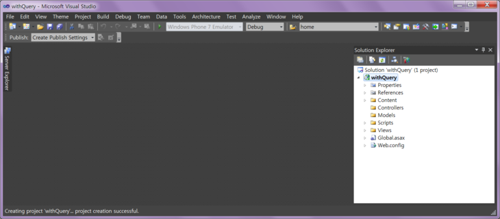
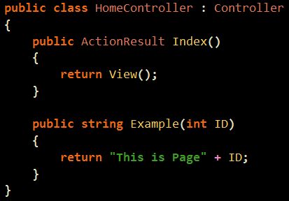
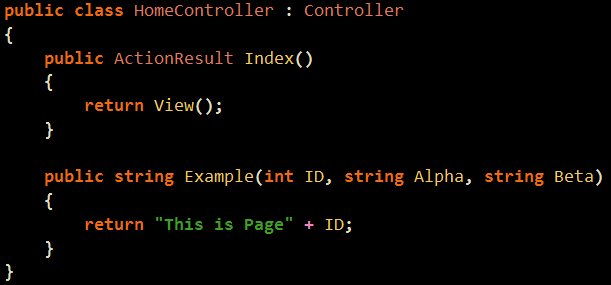
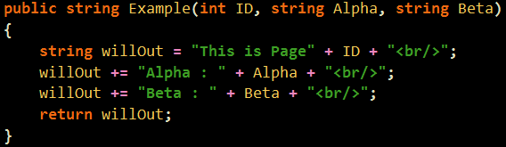
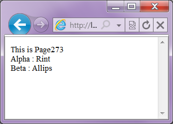

액션을 하나 만들었습니다.
간단하게 string을 리턴해주는 녀석인데요.
『파라메터가 있습니다. 이름은 ID지요.』

한번 실행시켜보겠습니다. 'ㅁ'
다음과 같이 Home/Example/273 입니다.
파라메터로 하나를 받는다면 다음과 같이 사용해도 된답니다. 'ㅁ'
여기서 그냥 273을 썼는데 ID로 들어가는 이유는 후에 강의에서 다루도록 하겠습니다. 'ㅁ'
(아, 이걸 안써서 어제 막 걱정했었다는 ㅎㅎ ... ㅠㅜ)
이번에는 파라메터를 3개를 받아보도록 하겠습니다.
ID, Alpha, Beta 인데요. 'ㅁ'

다음과 같이 string 을 만들어 리턴해주겠습니다.

그럼 어떻게 파라메터를 넣어주냐가 문제가 되겠지요.
자주 보셨을 겁니다. 지마켓 같은 곳에 들어가면 아래와 같은 녀석이 있지요.
어쨌거나 오늘의 강의는 끝이구요.
여러가지 테스트도 해보시기바랍니다.
아마 위의 URL이 조금 이상하게 느껴지실 수 있는데요.
뭐, 그럼 생각하시는대로 한번 해보시기 바랍니다.

질문 : ID에대해 쿼리스트링으로 준것도 아닌데 273이 바르게 출력되는 이유가 뭔가요?
답 : 첫 번째 매개 변수로 지정된 자료형은 ㅇㅇ/ㅇㅇ로 넣을 수 있답니다.
라우터 관련 설정이라 나중에 복잡하게 가면 조절도 가능하답니다.